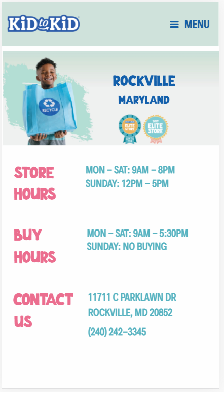

IMDB imdb.com
Contrast
Contrast in design is achieved when two, or more, elements differ from each other to the extent that they are easy to compare. What could be more contrasting than black and white? Black and white are not an unusual contrast, however, the Internet Movie Database, or IMDB, has taken this classic contrast and flipped it. Their background is black and the text white. I believe this makes the contrast more striking as well as easier on the eyes.
Kid to Kid kidtokid.com
Proximity
Proximity, the relationship between two objects, allows a designer to send a clear message to the viewer as to what elements are similar and which are not. Our minds naturally group similar things together; a designer uses this to provide a more comprehensive layout. In the case of Kid to Kid’s website, they use proximity to organize and make clear their store information.
Military OneSource militaryonesource.mil

Fitts' Law
Fitts’ Law asserts that the relation between a target and the object in movement, as well as the size of the target are directly intertwined. Basically, if the target is far it will take longer to get to it, and if the target is too small there is less accuracy. What does this mean in design? Fitts’ Law is generally used in reference to what “button” the designer wants you to push and the size and location that would make it more accessible. We can see a great example of this on the Military OneSource website. The alert button is large and near the right side of the screen making it easier to press with ones thumb (assuming one is right handed).